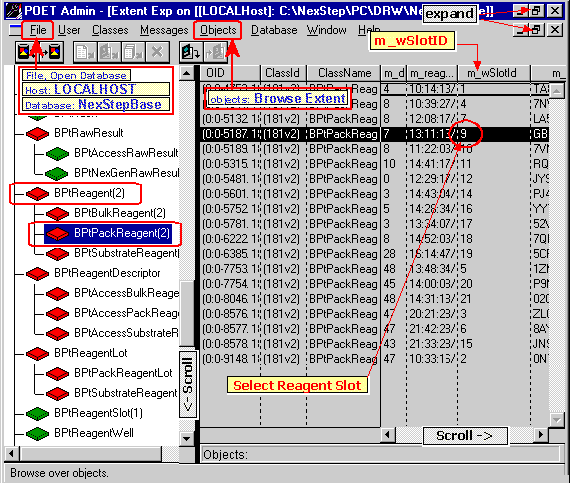

This procedure describes how to change the reagent pack status to unlock the pack.
This procedure provides instructions for changing the reagent pack status to "unlock" the pack. Perform this procedure when a reagent pack shows a locked status and no tests are scheduled against it. A locked reagent has a padlock icon on the display and cannot be unloaded in the user interface.

-
Identify the locked reagent pack.
-
In the user interface, navigate to the Supplies screen and identify the reagent pack that is locked.
-
Proceed to the Reagent Inventory screen. Identify the locked reagent. Record the serial number and slot ID of the locked reagent.
Note:
- The system should be in Ready state to proceed. In-progress tests display locked reagent packs.
-
In the Main Menu on the server PC, press
[Alt] + [F4] and enter the password
Access2Support to exit the user interface.
-
Create the local copy of the database.
Note: Poet Object Server (Access2 Software 3.4.2 and below ) and Fast Objects Server (Access2 Software 3.4.3 and above) are the same objects server running the database. Fast Objects Server replaces Poet Object Server on the latest Access2 system software.
For Windows XP console PC with Access2 Software 3.4.2 and below:
- From the
Main Menu in the user interface, select
[Alt] + [F4].
- Enter the password
Access2Support observing upper and lower case. The PC will exit to the Windows desktop.
- Select the poet server icon near the clock at the bottom right corner of the display.
- Select the
X at the upper right corner of the poet server window and
OK to the shutdown server pop-up.
- Select
Start > Programs > Windows Explorer to open Windows Explorer.
- Navigate to the
C:\NexStep\PC folder.
- Right-click on the
DRW folder and select
Copy.
If errors occur during the copy, then:
- Use the Task Manager to end any applications which may prevent copying the database.
- A software error may have locked the database. Select the Poet Object Server icon at the bottom right corner of the display near the system clock. Shut down the server and close any error messages. Restart the server by selecting
Start> Run, typing
ptserv32.exe on the text line, and selecting
OK.
- Right-click on the PC folder and select
Paste to make a
Copy of the DRW folder.
- Close Windows Explorer when finished making the copy.
For Windows 8 console PC with Access2 Software 3.4.3 and above:
Note: Access2 Software 3.4.3 or above is compatible with Windows XP console PC. If the software was installed on the Windows XP console PC, then follow the Windows XP section to make a copy of the database.
- From the Main Menu, press
[Alt] + [F4] and then enter
Access2Support to exit the user interface.
- Shut down the Fast Objects Server.
- Press
Ctrl + Alt + Delete and select
Task Manager or right click on the task bar and select
Task Manager.
- In the
Task Manager box, click on
Processes, select
FastObjects Server and click on
End Task in the bottom corner of the box.
- Press
Windows key and select
File Explorer icon or type
file explorer and open the program.
- Navigate to the
C:\NexStep\PC folder.
- Right-click on the
DRW folder and select
Copy.
If errors occur during the copy, then:
- Use the Task Manager to end any applications which may prevent copying the database.
- A software error may have locked the database. Shut down the Fast Objects Server and close any error messages. Restart the server by pressing
Windows key and select the
Fast Objects Server icon or type
run, open the Run program, typing
ptserv32.exe on the text line, and selecting
OK.
- Right-click on the
PC folder and select
Paste to make a
Copy of the DRW folder.
- Close File Explorer when finished making the copy.
-
Open the Poet or Fast database application.
For Windows XP console PC with Access2 Software 3.4.2 and below:
Note: If the Poet Developer or Administrator does not start because the Poet Object Server is not running, then start the Poet Object Server. From the Windows desktop, select
Start > Run, type ptserv32.exe on the text line, and press
[Enter].
-
From the
Windows Desktop on the console PC, select
.
-
In Poet browser, select
.
-
In the Host field, enter
LOCALHOST. In the Database field, enter
NexStepBase. Select
OK.
Note: NexStepBase is case-sensitive.
-
Select
.
For Windows 8 console PC with Access2 Software 3.4.3 and above:
Note: If the Fast Developer or Administrator does not start because the Fast Objects Server is not running, then start the Fast Objects Server. From the Windows desktop, press
Windows key and select the
Fast Objects Server icon or type
run, open the Run program, typing
ptserv32.exe on the text line, and selecting
OK.
Note: Access2 Software 3.4.3 or above is compatible with Windows XP console PC. If the software was installed on the Windows XP console PC, then follow the Windows XP section to launch Fast database application. Poet database application is replaced by Fast database application.
-
Press
Windows key, select
Fast Developer or
Fast Administrator icon or type
developer or
administrator and open the program.
-
In Fast browser, select
.
-
In the Host field, enter
LOCALHOST. In the Database field, enter
NexStepBase. Select
OK.
Note: NexStepBase is case-sensitive.
-
Select
.
-
Select the locked reagent from the list of reagents in the database.
-
In the Extent or Objects Browser window, navigate to and select
BPtPackReagent.
Note: The right side of the Poet or Fast Browser window displays text for the reagent objects.
-
Expand the Poet or Fast window and the Browser window to fill the display so that the columns to the far right side of the Browser window are revealed.
-
Use the scroll bar at the bottom right of the Browser window to move to the
m_wSlotId column.
-
Scan down the
m_wSlotId column for the text row having the slot Id of the locked reagent.
Note:
- All unloaded reagent packs have slot Id 65535.
- Identification can also be made using the
m_wTotalTestsLeft column.
-
Select the slot Id number (identified text line) for the locked reagent to open the PtObjID window for the selected reagent.
-
Edit the tests remaining in the reagent to unlock the reagent.
-
On the left side of the PtObjID window, select the
BPtReagentWellInventory line to expand it.
Note: Five BPtReagentWellInventory m_ptWells[X] lines, one line for each well, are displayed below the
BPtReagentWellInventory line.
-
Highlight each of the five
BPtReagentWellInventory m_ptWells[X] well lines [0, 1, 2, 3, 4]. Inspect the three tests left lines [actual/ unscheduled/ uncommitted] that are displayed on the right side of the PtObjID window.
Note: Some wells are empty (0/0/0 for all three states).
-
Check all five wells. The number of tests left (actual/unscheduled/uncommitted) should all be the same. If one of the three numbers for a well does not match the other two, then:
- Highlight the discrepant line, right-click on the line, and select
Edit.
- Lower the number so that all three test states match (normally, 0/0/0 for all three states).
-
After all five wells have been inspected, select the top line of the left column of the PtObjID window.
-
Inspect the right-hand side of the window for the
PtDWord m_dwTotalTestsLeft line (12th line down).
The Total Tests Left should match the actual/unscheduled/uncommitted test quantity in the well inventory.
- If
m_dwTotalTestsLeft is zero, then make sure that all the wells are set to zero.
- If
m_dwTotalTestsLeft is not zero and does not match the non-zero actual/unscheduled/uncommitted test quantity in the wells, then:
- Highlight the
PtDWord m_dwTotalTestsLeft line, right-click on the line, and select
Edit.
- Change the
m_dwTotalTestsLeft downward to match the well inventory actual/unscheduled/uncommitted tests.
-
After all edits are complete, highlight the top line of the left column of the PtObjID window. Right-click the highlighted line and select
Store.
-
Launch the user interface.
- For Windows XP, select
. The UI transitions to Ready. Verify the pack status is unlocked.
- For Windows 8, double click on the
NexStep Application shortcut on the desktop. The UI transitions to Ready. Verify the pack status is unlocked.
Note: If the reagent pack is not unlocked, repeat the edit reagent process and make sure to store the changes.

 Note: NexStepBase is case-sensitive.
Note: NexStepBase is case-sensitive.